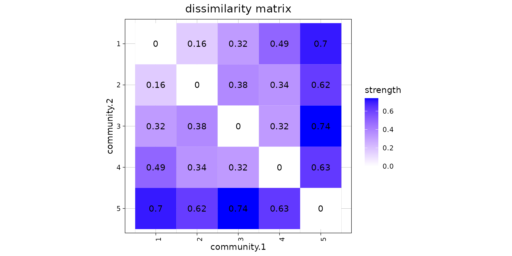
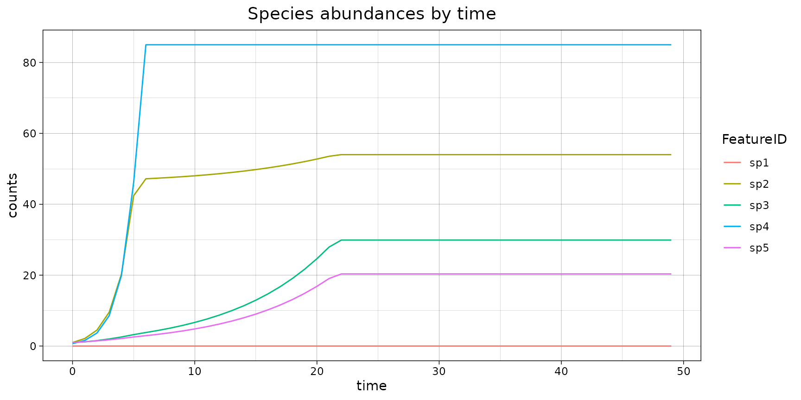

Case study: Nutrient thresholds
The miaSim package authors.
2023-05-29
Source:vignettes/TreeSummarizedExperiment/caseStudy2-NutrientThreshold.Rmd
caseStudy2-NutrientThreshold.RmdCase study with miaSim: Nutrient concentration threshold
The aim of this case study is to design and demonstrate the existence of nutrient concentration threshold which limits the beta-diversity of communities.
To fulfill this aim, we designed a gradient of environments, as well as a gradient of communities.
Load dependencies
library(ggplot2)
library(vegan)
library(reshape2)
library(mia)
library(miaSim)
library(philentropy)
library(cluster)
# Load auxiliary functions from:
# https://github.com/microbiome/miaSim/blob/main/vignettes/funcs.R
source("funcs.R") This batch of simulations is time-consuming. To reduce the calculation burden, we have decreased the numbers of environments, resources, and communities from the original 10 to 5, and made other minor modifications.
Set random seed and initial shared parameters
set.seed(42)
n_species <- 5
n_resources <- 5
E <- randomE(n_species, n_resources, mean_consumption = 1, mean_production = 3)
growth_rates <- runif(n_species)
monod_constant <- matrix(rbeta(n_species*n_resources, 10,10),
nrow=n_species,
ncol=n_resources)
t_store <- 50
n.instances <- 1 # no stochastic process: no need to repeatInitialization
Generate communities.
n.community <- 5 # you can also try 20 or even 50.
density.community <- 0.8
set.seed(42)
# Check the Rmd source file for gradient.df.generator function source code:
# https://github.com/microbiome/miaSim/blob/main/vignettes/caseStudy2-NutrientThreshold.Rmd
community.initial.df <- gradient.df.generator(n_row = n.community,
n_col = n_species,
density_row = density.community,
max_gradient = 0.7,
error_interval = 0.1)## [1] 1
## [1] 2
## [1] 3
## [1] 4
## [1] 5
dist.community.initial.df <- vegdist(community.initial.df, method = "bray")
# Create TreeSummarizedExperiment object for the initial community
community.initial.tse <- TreeSummarizedExperiment(assays=SimpleList(abundances=t(as.matrix(community.initial.df))))
# Visualze dissimilarities for the initial community
makeHeatmap(as.matrix(dist.community.initial.df),
title = "dissimilarity matrix",
x.label = "community.1",
y.label = "community.2")
Initialize shared parameters.
crm_params <- list(
n_species = n_species,
n_resources = n_resources,
x0 = NULL,
E = E,
resources = rep(1,n_resources),
monod_constant = monod_constant,
migration_p = 0,
stochastic = FALSE,
t_start = 0,
t_end = 50,
t_step = 1,
t_store = t_store,
growth_rates = growth_rates,
norm=FALSE)Generate resource gradients.
resourceConcentration <- 10^seq(0,4,1) # 1 to 10000
n.medium <- 5
density.medium <- 0.8
n_species <- 5
set.seed(42)
resource.initial.df <- gradient.df.generator(n_row = n.medium,
n_col = n_resources, density_row = density.medium,
max_gradient = 0.7, error_interval = 0.1)## [1] 1
## [1] 2
## [1] 3
## [1] 4
## [1] 5Simulations
# Pick the initial community
initial.community <- assay(community.initial.tse, "abundances")
crmExample <- simulateConsumerResource(
n_species = n_species,
n_resources = n_resources,
E = E,
x0 = as.numeric(initial.community[,1]), # First sample from the initial community
resources = as.numeric(resourceConcentration[3]*resource.initial.df[1,]),
growth_rates = growth_rates,
monod_constant = monod_constant,
stochastic = FALSE,
t_end = 50,
t_step = 1,
t_store = 50,
norm = FALSE)
#makePlot(crmExample$matrix)
tsem <- meltAssay(crmExample, assay.type = "counts", add_col_data = "time")
p <- ggplot(tsem, aes(x=time, y=counts, color = FeatureID)) +
geom_line(show.legend = TRUE, lwd=0.5) +
labs(title="Species abundances by time") +
theme_linedraw() +
theme(plot.title = element_text(hjust = 0.5, size = 14))
print(p)
#makePlotRes(crmExample$resources)
df <- as.data.frame(metadata(crmExample)$resources)
df$time <- colData(crmExample)$time
dft <- melt(df, id="time")
names(dft) <- c("time", "resources", "S.t")
p <- ggplot(dft, aes(x=time, y=S.t, col = resources)) +
geom_line(show.legend = TRUE, lwd=0.5) +
labs(title="Quantity of compounds by time") +
theme_linedraw() +
theme(plot.title = element_text(hjust = 0.5, size = 14))
# Generate simulations and store the final community in community.simulation
# Here the final relative abundance table is basisComposition_prop.
set.seed(42)
resourceConcentration <- 10^seq(0,4,1) # 1 to 10000
n.medium <- 5
# make use of parallel computing provided by package `foreach`
library(foreach)
library(doParallel)
cl <- makeCluster(max(detectCores()/2, 1))
registerDoParallel(cl)
basisComposition <- foreach(resConc = resourceConcentration, .combine = rbind) %:%
foreach(medium = seq_len(n.medium), .combine = rbind, .packages = "miaSim") %dopar% {
crm_params$resources <- as.numeric(resource.initial.df[medium,]*resConc)
paramx0 <- as.list(as.data.frame(t(community.initial.df)))
crm_param_iter <- list(x0 = paramx0)
print(paste("resConc", resConc, "medium", medium))
crmMoments <- miaSim::generateSimulations(model = "simulateConsumerResource",
params_list = crm_params,
param_iter = crm_param_iter,
n_instances = n.instances,
t_end = 50)
# pick community composition at the last time point
as.data.frame(do.call(rbind, lapply(crmMoments, function (x) {assay(x, "counts")[, ncol(x)]})))
}
stopCluster(cl)
basisComposition_prop <- basisComposition / rowSums(basisComposition)Make UMAP plots
In this step, plot result is stored in umap_CRM_gradient_plot, and this is visualized in different facets.
resourceConcentration <- 10^seq(0,4,1) # 1 to 10000
n.medium <- 5
n.community <- 5
concentration <- as.factor(rep(resourceConcentration, each = n.medium*n.community))
medium <- as.factor(rep(seq_len(n.medium), each = n.community ,times = length(resourceConcentration) ))
community <- as.factor(rep(seq_len(n.community), times = length(resourceConcentration)*n.medium))
# Visualize with UMAP
## Provide the community data as TreeSE object
library(scater)
tse <- TreeSummarizedExperiment(
assays=SimpleList(abundances=t(as.matrix(basisComposition))),
colData=DataFrame(Medium=medium,
Concentration=concentration,
Community=community
)
)
## Add UMAP
tse <- runUMAP(tse, name = "UMAP", exprs_values = "abundances")
## Plot UMAP
plotReducedDim(tse, "UMAP", colour_by="Medium", shape_by="Concentration")
# Same for compositional abundance data
library(mia)
## add relative abundances;
tse <- transformSamples(tse, assay.type="abundances", method="relabundance")
tse <- runUMAP(tse, name = "UMAP_compositional", exprs_values = "relabundance")
plotReducedDim(tse, "UMAP_compositional", colour_by="Medium", shape_by="Concentration")
# Finally with communities
umap_CRM_gradient_plot <<- plotReducedDim(tse, "UMAP_compositional",
colour_by="Medium", shape_by="Community", size_by="Concentration")Visualization of the results
In this part, different visualization of results demonstrate (in various facets) the gradual change of communities’ beta diversity. The first figure indicates that the initial community composition is more important than the combinations of initial available resources.
The first sub-figure in the second figure demonstrates that in an oligotrophic (less available nutrients) environment, communities won’t change much in a given time, whilst the last two sub-figures resemble each other, implying that the nutrient is no longer the limiting factor of the beta-diversity of the community. This pattern is further displayed in the following “curve plot”.
In the third figure, the second and the th community always stays more similar, despite their initial dissimilarity, indicating that they might belong to one community type. This can be validated by input 20 or even 50 as n.community in this case study: communities turns into clusters in each sub-figures.
# FIXME: the visual output can be polished later.
print(umap_CRM_gradient_plot)
umap_CRM_gradient_plot + facet_grid(size_by ~ ., labeller = label_both)
umap_CRM_gradient_plot + facet_grid(colour_by ~ size_by, labeller = label_both)
umap_CRM_gradient_plot + facet_grid(shape_by ~ size_by, labeller = label_both)
umap_CRM_gradient_plot + facet_grid(shape_by ~ colour_by, labeller = label_both)